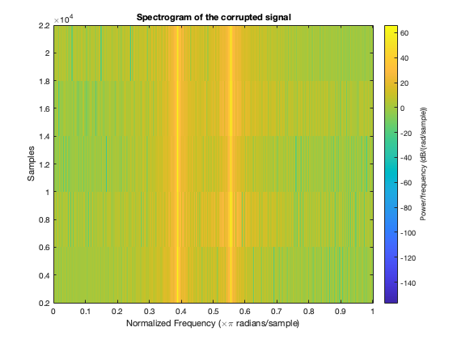
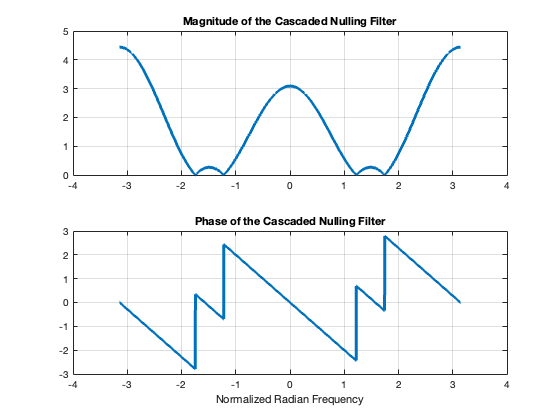
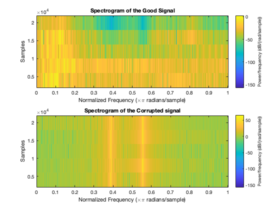

Lab S5- Removing Interference from a Speech Signal using Nulling Filters
Contents
- Part A: Loading the speech signal(speech.mat), listening and plotting the spectrogram of the corrupted signal(xxbad)
- Part B: Designing a cascade of two Second order Nulling Filters
- Part C: Plotting the frequency response of the cascaded nulling filter
- Part D: Processing the corrupted signal through the Nulling filter and comparing the results.
Part A: Loading the speech signal(speech.mat), listening and plotting the spectrogram of the corrupted signal(xxbad)
close all clear, clc load('speechbad.mat'); sound(xxbad,fs); spectrogram(xxbad,fs); title('Spectrogram of the corrupted signal');
Part B: Designing a cascade of two Second order Nulling Filters
Filter coefficients printed as bb
null_frequencies = f_interference*((2*pi)/fs);
filter_coeff_1= [1 -2*cos(null_frequencies(1)) 1];
filter_coeff_2= [1 -2*cos(null_frequencies(2)) 1];
bb=conv(filter_coeff_1,filter_coeff_2) %bb is the filter coefficients of cascade of two Second order Nulling Filters
bb =
1.0000 -0.3379 1.7624 -0.3379 1.0000
Part C: Plotting the frequency response of the cascaded nulling filter
nulling frequencies printed are plus or minus 1.7452*pi and 1.2213*pi
ww = -pi:(pi/1000):pi; % Omega hat frequency vector H = freqz(bb,1,ww); figure subplot(2,1,1); plot(ww, abs(H)),grid on title('Magnitude of the Cascaded Nulling Filter') subplot(2,1,2); plot(ww, angle(H)), grid on title('Phase of the Cascaded Nulling Filter') xlabel('Normalized Radian Frequency') null_frequencies
null_frequencies =
1.7452
1.2213
 Part D: Processing the corrupted signal through the Nulling filter and comparing the results.
good_signal=conv(bb,xxbad); for i=1:length(good_signal) % Since the good speech signal was scaled so that its max value is 1, we remove outliers if abs(good_signal(i))>1 good_signal(i)=0; end end figure subplot(2,1,1); spectrogram(good_signal,fs); title('Spectrogram of the Good Signal') subplot(2,1,2); spectrogram(xxbad,fs); title('Spectrogram of the Corrupted signal') sound(good_signal,fs);